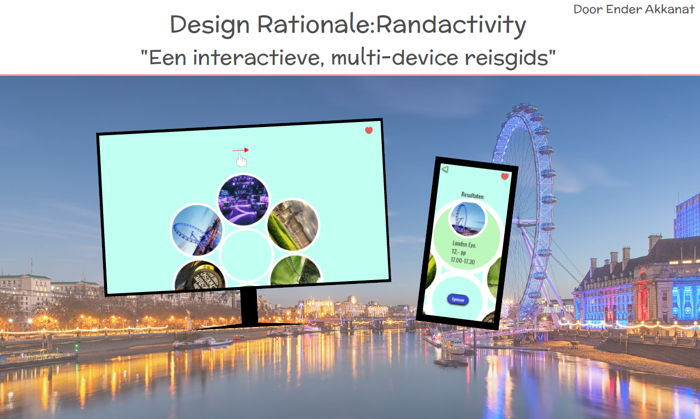
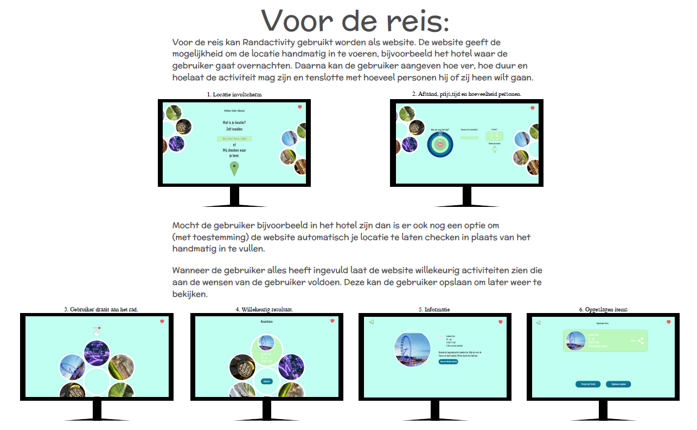
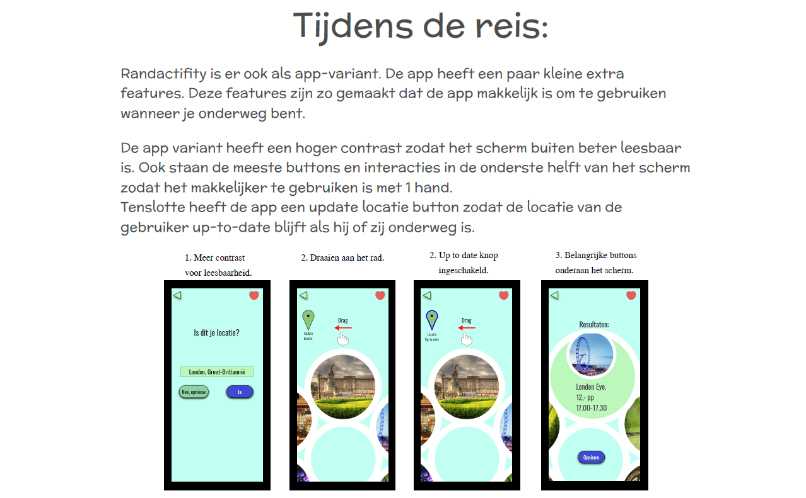
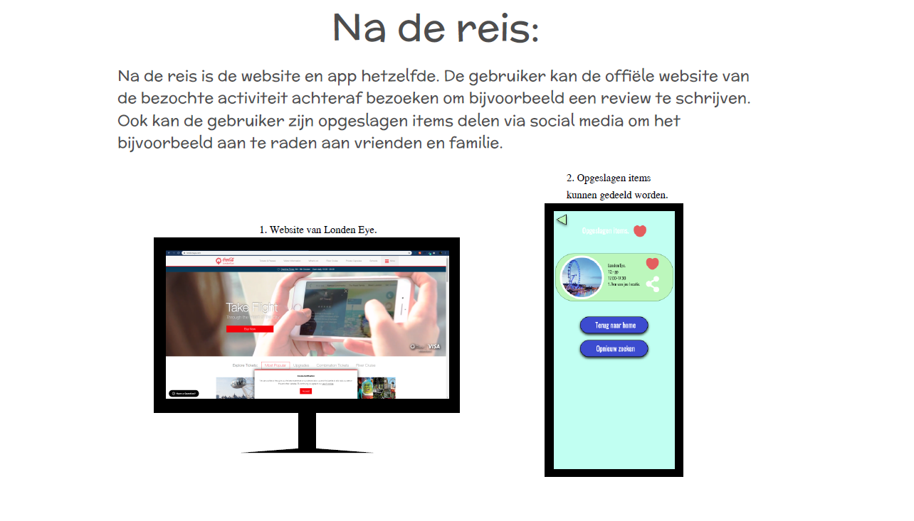

Voor Project Web moest ik een digitale interactieve reisgidsmaken die ook op verschillende devices kan werken. Na meerdere ittaraties heb ik een reisgids ontworpen die op basis van afstand, tijd en hoeveelheid personen gaat kijken welke activiteiten er in de buurt zijn. Vervolgens laat de reisgids op willekeurige basis een activiteit zien. Op deze manier hoeft de gebruiker niet tientalle resultaten door te zoeken naar het gene wat hem interessant lijkt. Met een prototyping tool heb ik uiteindelijk een webformaat en een mobiel formaat gemaakt.
   Prototype op Web formaat.
Prototype op mobiel formaat.
Terug